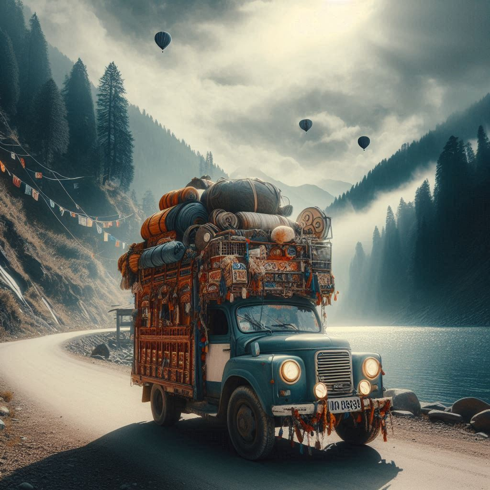
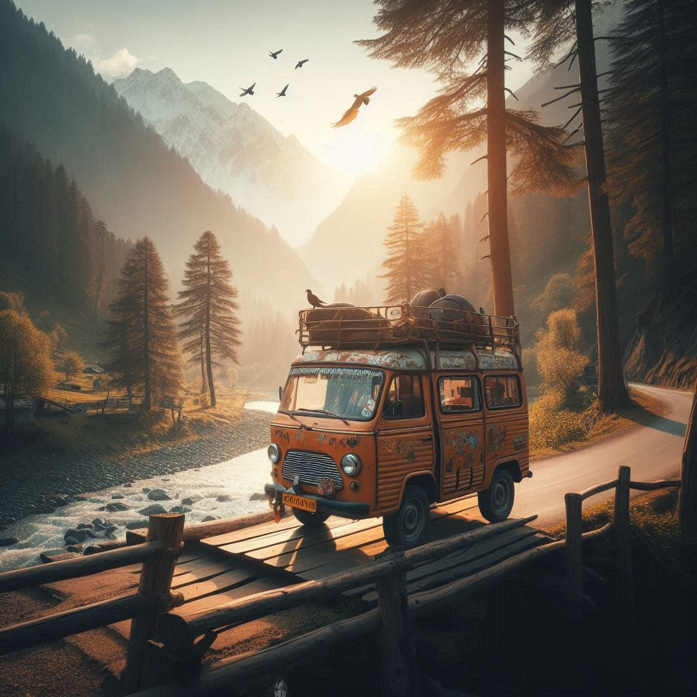

Himachal Pradesh, a picturesque hill state in northern India, is well-connected by various modes of transport,
allowing visitors to explore its stunning landscapes, hill stations, and cultural heritage. Here are the primary
travel options to and within Himachal Pradesh:
1. By Air
- Nearest Airports:
- Kullu-Manali Airport (Bhuntar): Located in Kullu, this airport connects the region to
Delhi and other major cities.
- Shimla Airport (Jubbarhatti): Located 22 km from Shimla, with limited flights from
Delhi.
- Dharamshala Airport (Gaggal): 13 km from Dharamshala, connected to Delhi and
Chandigarh.
- International Access: The nearest major international airport is in Chandigarh or Delhi.
2. By Train
- Railways: Himachal Pradesh has an extensive railway network, including UNESCO World Heritage
sites like the Kalka-Shimla train.
- Major Stations: Shimla, Kangra, Bilaspur, Solan, with connectivity from cities like
Chandigarh and Kalka.
3. By Road
- National Highways: NH 3 (Delhi-Manali), NH 5 (Shimla-Kinnaur), connecting Himachal to major
cities.
- Public and Private Bus Services: HRTC buses operate from Delhi, Chandigarh, and Punjab.
Private buses are also available.
- Car Rentals: Popular for flexibility and comfort, though winding roads require caution.
4. By Motorcycle and Bicycle
- Motorcycle Trips: Popular for adventure travelers on routes like Manali-Leh and Shimla-Kullu-Manali.
- Cycling: Cycling tours are gaining popularity, with several events hosted across the state.


5. Local Transport
- Taxis and Auto-Rickshaws: Available within cities and hill stations, with shared taxis for
budget travel.
- Tempos: Shared mini-vans in places like Shimla and Kullu for short-distance travel.
- Horseback Riding: Used in rural and hilly terrains for trekking or exploration.
6. By Cable Car
- Rohtang Pass and Solang Valley: Cable cars offer stunning views of the surrounding landscapes.
- Other Locations: Some areas have ropeways connecting hill stations to tourist spots.
7. Adventure Travel
- Trekking: Key trekking routes like Hampta Pass, Triund, and Beas Kund offer scenic journeys
through nature.
Conclusion
Traveling to and within Himachal Pradesh is convenient with a variety of options like air, rail, road, and adventure activities. The breathtaking landscapes and scenic routes make traveling here an unforgettable experience.